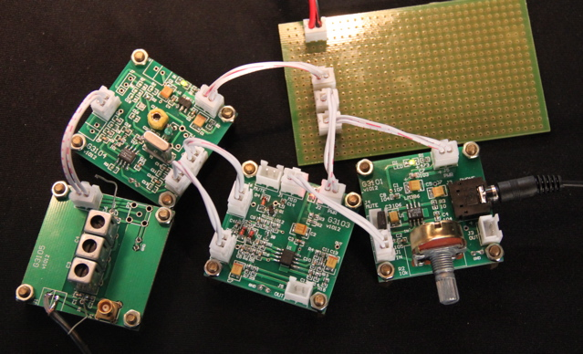

TEM — Tansceiver Experimental Moduals

TEM4x4是一系列小板子，可以用来试验收发信机电路。
这些“模块”是用来模块化地做收发信机实验，不要每次都从电阻电容焊起。
其实像LM386音频放大、NE602做检波、NE5532做音频前端，几乎每次做不同的电路都会用到。
做成模块后，将来就只要处理好模块之间的接口就可以了。
TEM板子有以下特点：
- 40×40mm双面板，四角装8mm高的铜柱
- 全部采用贴片元件，除非特别需要
- 用100mil间距的接插件连接各板，提供连接线
- 每块板都有电源指示LED，除非特别说明，都接受12v电源
- 每块板都有一个“地圈”，一般在右下角，用于插入万用表表笔的负极或连接示波器探头的地
- 主要的输入输出回路都留有测试用的过孔，可以焊上测试线，或直接插入示波器探头，或配合插针使用
TEM系列小板子是做试验用的，一般都留出一些用于换元件、换电路型式的地方，一块PCB可以做几种不同的电路来进行测试。
TEM系列小板子不适合用做电子产品的一部分。
在这里学习有关如何焊接贴片元件的知识。
电源板 G3100
G3101是采用传统的LM386的音频放大板，在8欧姆负载上提供250mW的输出。
耳机放大 G3102
G3103是用NE5532做的两级音频放大，第一级输入为双端平衡形式，第二级
包括一个800Hz中心频率的带通滤波器，两级中间还有JFET做的切断开关，
第二级的输出可以直接驱动耳机。
本地振荡/检波 G3104
接收机前端双调 G3105